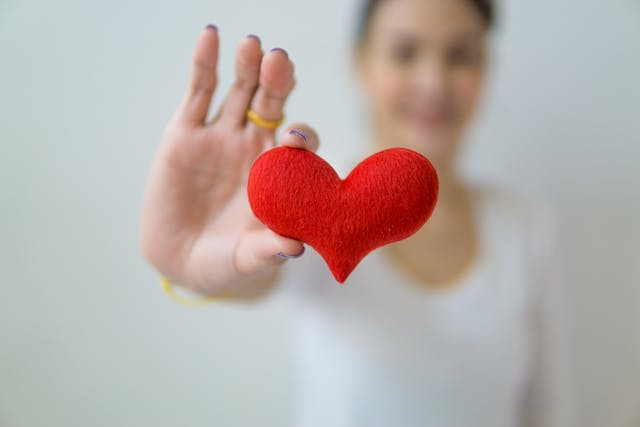

Doe
Você sabe que doar sangue é importante, altruísta, salva vidas e faz o doador ter a sensação incomparável da compaixão, de ter feito o bem a um desconhecido, sem esperar nada em troca.
Mas, se você ainda não se decidiu, há uma série de curiosidades que podem ajudá-lo a ajudar, minimizar a escassez crônica de sangue doado:
No homem, após uma doação de 450 ml de sangue, o plasma é reposto em 48 a 72 horas, os glóbulos vermelhos em aproximadamente 4 semanas e o estoque de ferro em aproximadamente 8 semanas. Na mulher há uma diferença, com o estoque de ferro levando aproximadamente 12 semanas para ser reposto.
No Brasil as mulheres representam menos de 40% dos doadores de sangue.
O volume total de sangue a ser doado não pode exceder 8 ml/kg de peso para as mulheres e 9 ml/kg de peso para os homens.
Uma vez coletado, o sangue é dividido em até 4 componentes: Concentrado de Hemácias (CH), Concentrado de Plaquetas (CP), Plasma Fresco Congelado (PFC) e Crioprecipitado (CRIO), que podem ser utilizados como produto terapêutico em até 4 pacientes diferentes. Todo sangue coletado é testado e só é liberado para uso após comprovada a sua segurança.
Doar sangue não engrossa e nem afina o sangue, isso é apenas um mito.
Não existe nenhuma relação entre ganhar ou perder peso com a doação de sangue.
Períodos menstruais não impedem a doação de sangue.
No dia de doar, o voluntário deve estar bem alimentado (evitando alimentos gordurosos), ter dormido por no mínimo seis horas na noite anterior à doação e não ter ingerido bebidas alcoólicas nas 12 horas anteriores. Também deve evitar fumar por pelo menos duas horas antes e depois da doação.
O peso corporal mínimo determinado para a doação de sangue é de 50 kg, isso porque o volume total de sangue que corre no corpo humano é principalmente baseado no peso do indivíduo. Então, como a doação gira entre 10 e 15% do sangue total que temos no corpo, quando a pessoa tem menos de 50 kg aquele volume padrão da doação pode significar mais do que 15% - trazendo o risco de ela não se sentir muito bem, ou ter algum mal-estar durante ou após a doação de sangue. Então, é por segurança que existe a determinação de que somente aqueles indivíduos com mais 50 kg de massa corporal façam a doação de sangue.
Não há nenhum substituto para o sangue, e o sangue doado só faz o bem. Doe.